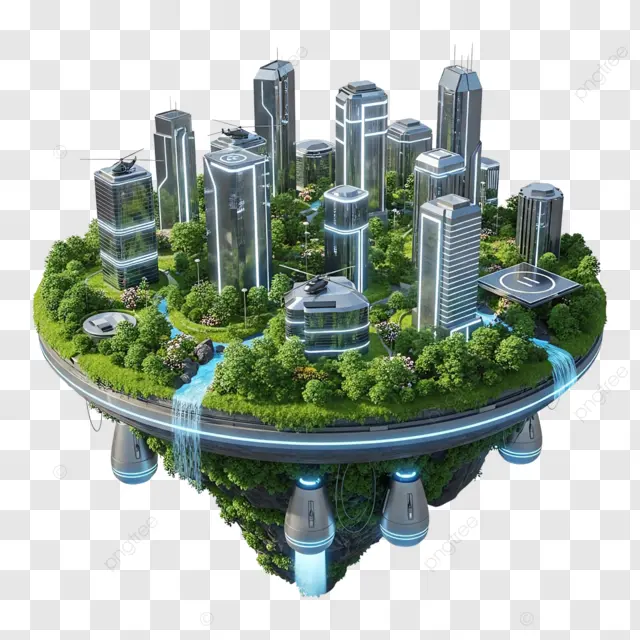
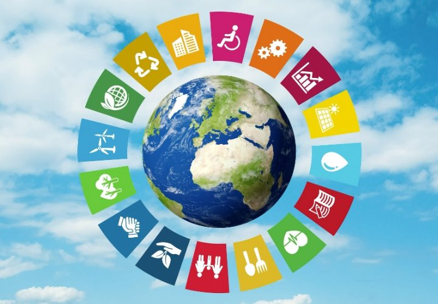
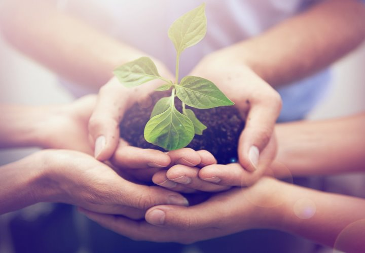
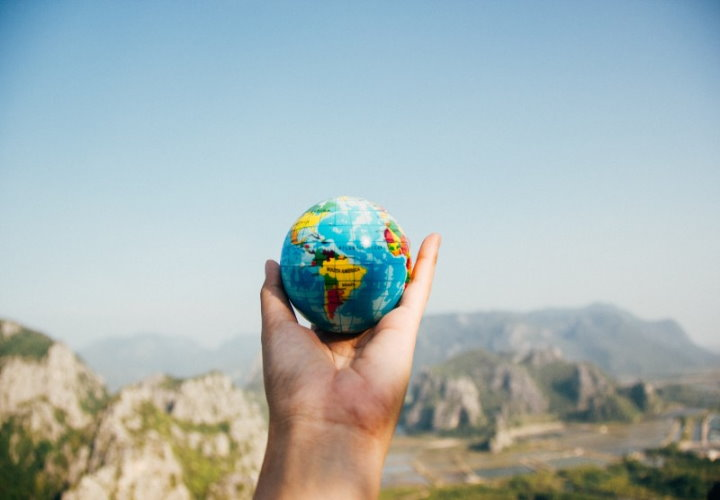

生態城市(Eco-city)

雲端綠洲：在這座懸浮於空的科技島嶼，鋼鐵建築與茂密森林交織共生，清澈瀑布從島邊傾瀉而下。透過先進的重力技術與循環系統，城市不再受地表限制，將自然生態與未來文明完美融合，開創出極致和諧的雲端生活新紀元。

這張圖以晴朗的藍天白雲為背景，將地球置於中心，周圍環繞著一個由 17 個色彩鮮豔的區塊組成的圓環。每個區塊代表聯合國永續發展目標 (SDGs) 中的一個具體範疇，如消除貧窮、潔淨水、永續城市、氣候行動等。這個圖案象徵著全球必須團結合作，以多元且全面的方式，共同守護地球生態，並致力於創造一個和平、繁榮且每個人都能永續發展的未來。

中心那一株脆弱卻充滿生機的小苗，象徵著團結與傳承的力量。每一雙手都代表著一份責任與承諾，透過彼此的支撐，為綠色生命提供最堅實的土壤。這不僅是對於自然的保護，更是對永續發展的具體實踐。當眾人將希望匯聚於掌心，我們所守護的不僅是一株幼苗，更是人類與自然共生共榮的彩色未來。只要每個人都獻出一份心力，點滴關懷終將匯聚成改變世界的巨大能量。

這張圖片展現了一雙手在壯麗的山脈與藍天前，溫柔地托起一顆地球儀，象徵著人類與地球的親密連結。它提醒我們，雖然世界浩瀚無垠，但保護地球生態的責任就掌握在每個人手中。這不僅是一幅美麗的風景，更是對未來永續發展的呼喚：每一步行動，無論大小，都能影響這個藍色星球的未來。讓我們攜手守護，讓世界在我們手中延續生機。
© 2026 南投高中電子商務科 | 劉予喬